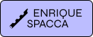
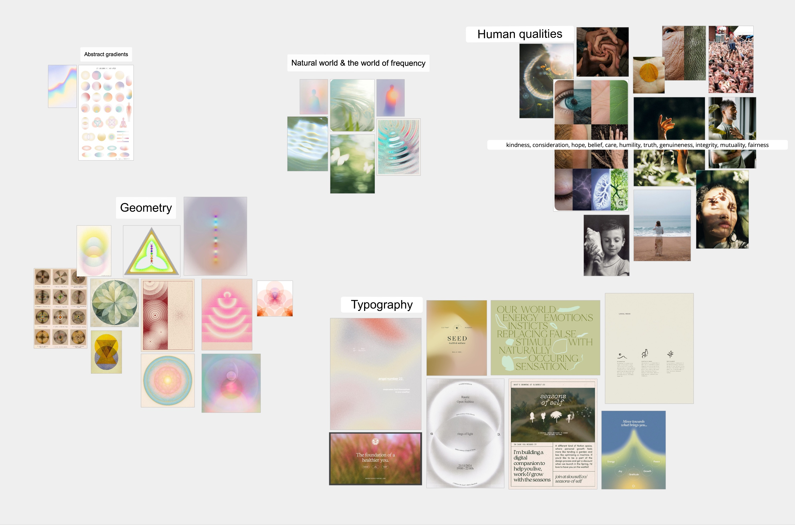
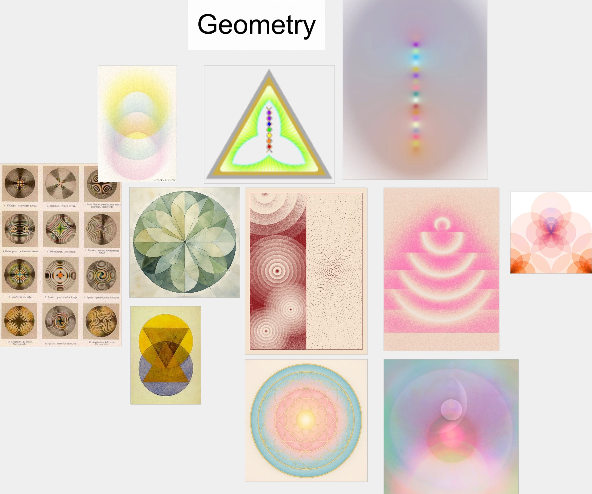
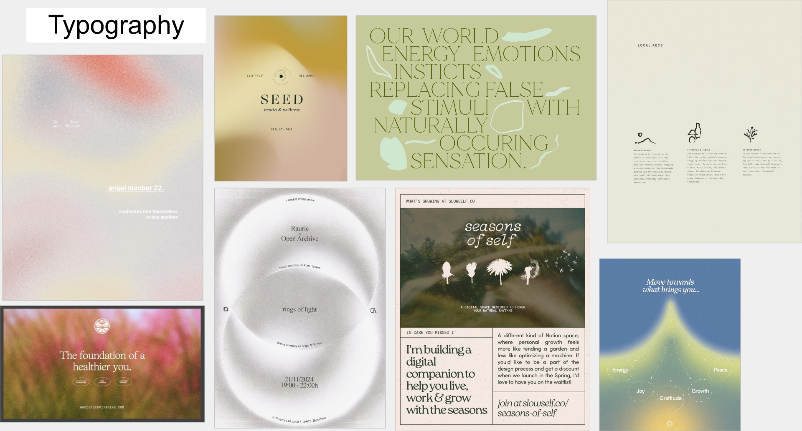
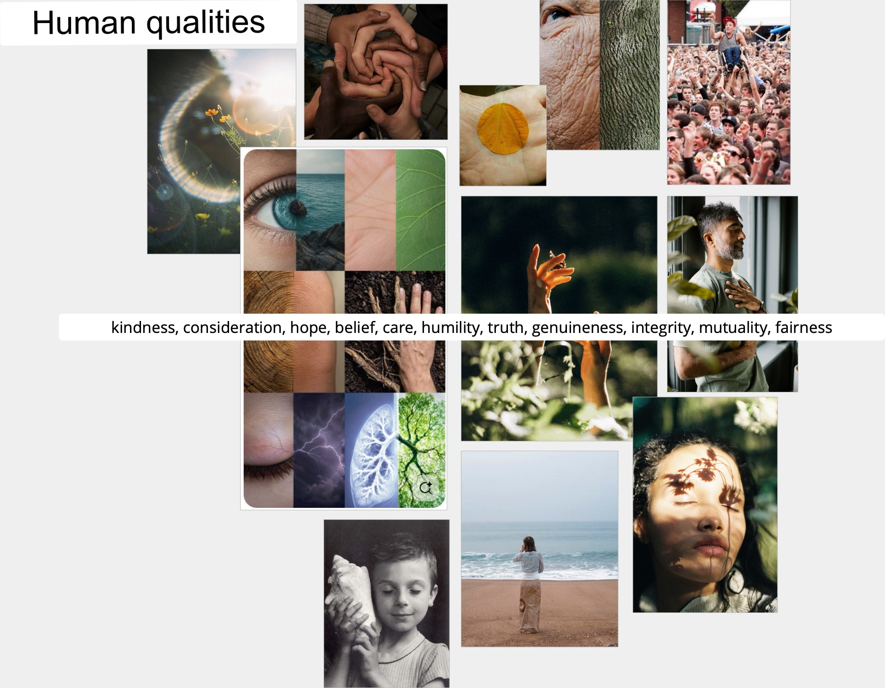
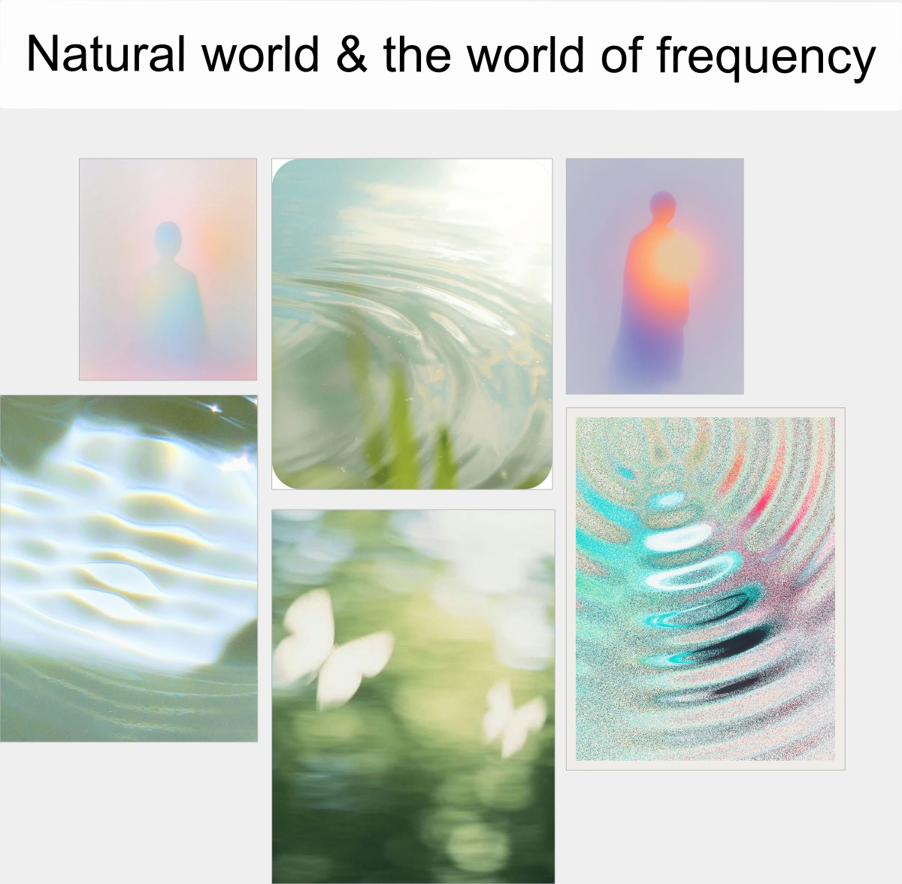

WELL-BEING SCIENCES · WEBSITE
MOODBOARDING — SESSION 01
MOODBOARDING — SESSION 01
03.11.2026
Between phase 1 and phase 2
Between phase 1 and phase 2
Visual direction
Moodboard
Session 01
A pastel, frequency-led palette — held together by nature, geometry and the human qualities the site wants to carry.

WBS WebsiteMoodboard · Session 0102 / 06Enrique Spacca

The board — five directions, one field
Enrique Spacca
WBS WebsiteMoodboard · Session 0103 / 06Enrique Spacca
Cluster 01Geometry

Sacred pattern, softened
Enrique Spacca
WBS WebsiteMoodboard · Session 0104 / 06Enrique Spacca
Cluster 02Typography

Quiet editorial, warm fields
Enrique Spacca
WBS WebsiteMoodboard · Session 0105 / 06Enrique Spacca
Cluster 03Human qualities

Enrique Spacca
WBS WebsiteMoodboard · Session 0106 / 06Enrique Spacca
Cluster 04Natural world & frequency

Where ripple meets signal
Enrique Spacca